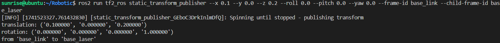
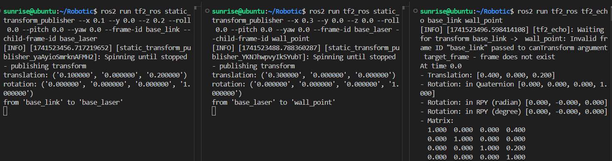
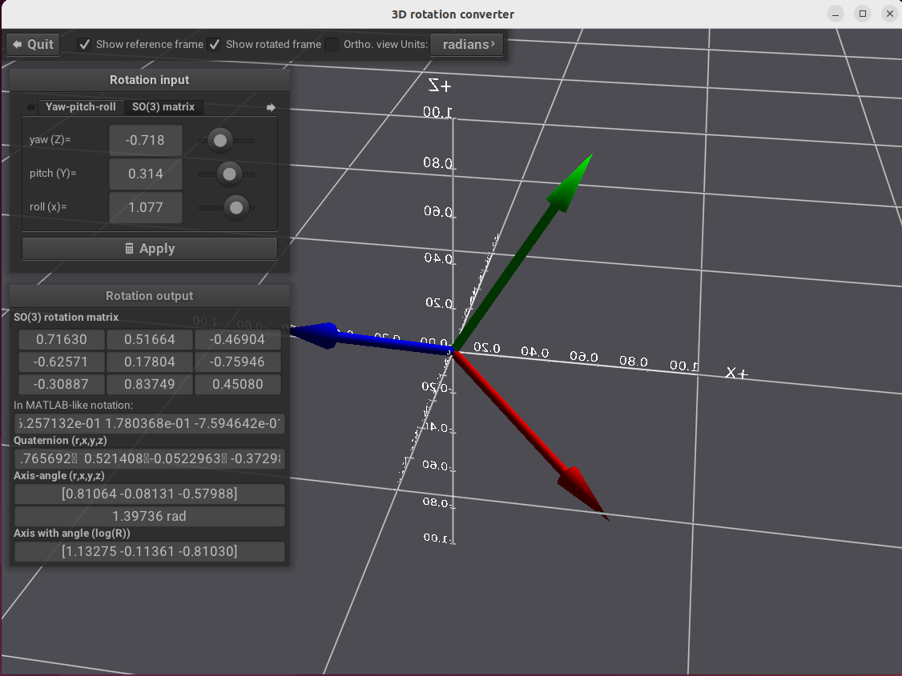
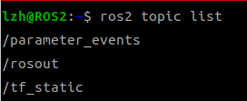
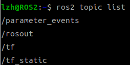
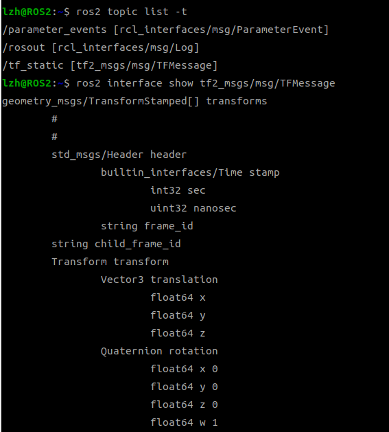
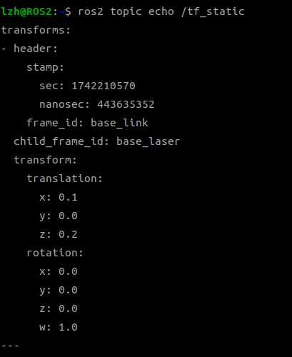
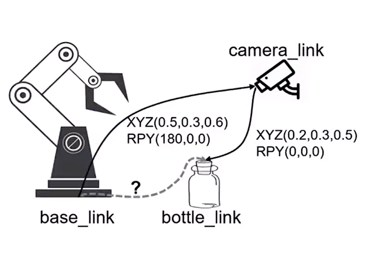
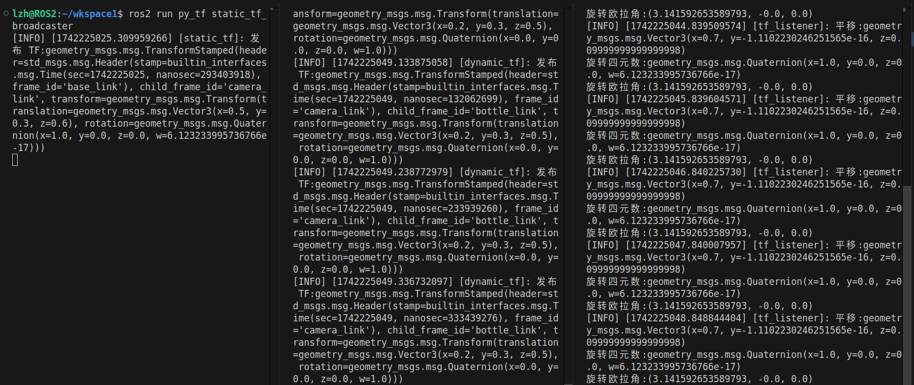
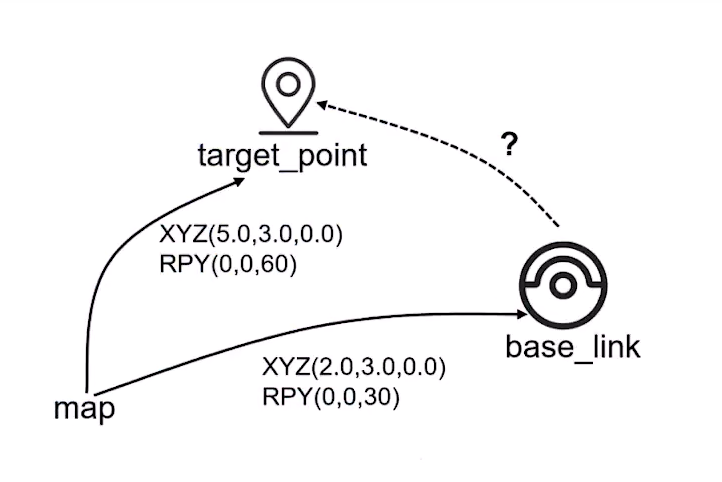

第十章 TF坐标变化工具
10.1 TF坐标变换工具¶
10.1.1 TF命令行¶
- 假设，一个轮式机器人的中心坐标为 (0, 0, 0) ，雷达的的坐标为 (0.1, 0, 0.2) ，雷达检测到障碍物在 (0.3, 0, 0)。
- 三个坐标分别用
base_link、base_laser、wall_point代指。
在ROS2中，我们使用tf2（即第二代坐标变换工具）处理这些已知数据。
① 使用静态坐标变换发布base_link和base_laser之间的坐标关系。其中，--frame-id为父坐标系名称，-child-frame-id为子坐标系名称。
ros2 run tf2_ros static_transform_publisher --x 0.1 --y 0.0 --z 0.2 --roll 0.0 --pitch 0.0 --yaw 0.0 --frame-id base_link --child-frame-id base_laser

其中--roll 0.0 --pitch 0.0 --yaw 0.0是欧拉角，分别为横滚角、俯仰角、偏航角。而命令行返回的rotation有四个数，这里是使用四元数来表示的旋转姿态。其中ROS中使用四元数居多，且欧拉角具有万向锁等确定，但易于看出旋转变化，所以在图形化界面多采用欧拉角展示旋转姿态。
② 使用静态坐标变换发布base_laser和wall_point之间的坐标关系。
ros2 run tf2_ros static_transform_publisher --x 0.3 --y 0.0 --z 0.0 --roll 0.0 --pitch 0.0 --yaw 0.0 --frame-id base_laser --child-frame-id wall_point

③ 计算坐标系关系

其中，Translation即为转换结果，相对于base_link而言，wall_point的坐标位置。其余四项数据均是表示旋转姿态，Quaternion为四元数，Matrix为旋转矩阵，其他两项为弧度、角度单位下的欧拉角。
10.1.2 mrpt工具¶
mrpt 工具可以可视化的看到四元数、欧拉角下的姿态变化。
安装mrpt
打开工具

10.1.3 TF消息接口¶
在发布完两个坐标变换后，可以在终端查看话题。

tf_static是一个静态坐标变换话题，可以用来发布静态设备的坐标。例如：雷达、相机等坐标固定的设备。
计算坐标系关系后，再次查看会多一个tf动态坐标变换话题，可以用来发布动态设备的坐标。例如：轮子这类坐标会实时变化的设备。

使用ros2 topic list -t可以查看话题的消息接口，然后查看静态坐标变换话题的消息接口的具体内容。

同时也可以使用命令行订阅话题获取坐标计算结果。

10.2 Python手眼坐标变换¶
10.2.1 案例需求¶
如图所示，机械臂位置base_link和相机位置camera_link固定不变，且图中有坐标关系和旋转角度。相机识别到bottle_link坐标，然后经过坐标变换让机械臂知道bottle_link与base_link的相对坐标关系，实现抓取工作。

10.2.2 功能包准备¶
安装需要的库，其中$ROS_DISTRO指当前环境的ROS版本，无需自己替换。
创建python功能包，其中tf_transformations是一个python库用于欧拉角转四元数。
ros2 pkg create py_tf --build-type ament_python --dependencies rclpy geometry_msgs tf2_ros tf_transformations --license Apache-2.0
10.3 Python手眼坐标变换示例¶
10.3.1 发布静态坐标变换¶
功能包下新建static_tf_broadcaster.py
import rclpy
from rclpy.node import Node
from tf2_ros import StaticTransformBroadcaster
from geometry_msgs.msg import TransformStamped
from tf_transformations import quaternion_from_euler
import math
class StaticTfBroadcaster(Node):
def __init__(self, name):
super().__init__(name)
self.static_tf = StaticTransformBroadcaster(self)
self.publish_static_tf()
def publish_static_tf(self):
"""发布静态坐标变换"""
transform = TransformStamped()
# 消息头
transform.header.stamp = self.get_clock().now().to_msg()
transform.header.frame_id = 'base_link'
# 子坐标名称
transform.child_frame_id = 'camera_link'
# 平面坐标关系
transform.transform.translation.x = 0.5
transform.transform.translation.y = 0.3
transform.transform.translation.z = 0.6
# 欧拉角(角度转弧度)转四元数
q = quaternion_from_euler(math.radians(180), 0.0, 0.0)
# 旋转坐标关系
transform.transform.rotation.x = q[0]
transform.transform.rotation.y = q[1]
transform.transform.rotation.z = q[2]
transform.transform.rotation.w = q[3]
# 发布静态坐标变换
self.static_tf.sendTransform(transform)
self.get_logger().info(f"发布 TF:{transform}")
def main():
rclpy.init()
node = StaticTfBroadcaster("static_tf")
rclpy.spin(node)
rclpy.shutdown()
修改编译文件setpu.py
entry_points={
'console_scripts': [
'static_tf_broadcaster = py_tf.static_tf_broadcaster:main',
],
},
编译
10.3.2 发布动态坐标变换¶
功能包下新建dynamic_tf_broadcaster.py
import rclpy
from rclpy.node import Node
from tf2_ros import TransformBroadcaster
from geometry_msgs.msg import TransformStamped
from tf_transformations import quaternion_from_euler
import math
class DynamicTfBroadcaster(Node):
def __init__(self, name):
super().__init__(name)
self.dynamic_tf = TransformBroadcaster(self)
self.timer = self.create_timer(0.1, self.publish_dynamic_tf)
def publish_dynamic_tf(self):
"""发布静态坐标变换"""
transform = TransformStamped()
# 消息头
transform.header.stamp = self.get_clock().now().to_msg()
transform.header.frame_id = 'camera_link'
# 子坐标名称
transform.child_frame_id = 'bottle_link'
# 平面坐标关系
transform.transform.translation.x = 0.2
transform.transform.translation.y = 0.3
transform.transform.translation.z = 0.5
# 欧拉角(角度转弧度)转四元数
q = quaternion_from_euler(0, 0.0, 0.0)
# 旋转坐标关系
transform.transform.rotation.x = q[0]
transform.transform.rotation.y = q[1]
transform.transform.rotation.z = q[2]
transform.transform.rotation.w = q[3]
# 发布静态坐标变换
self.dynamic_tf.sendTransform(transform)
self.get_logger().info(f"发布 TF:{transform}")
def main():
rclpy.init()
node = DynamicTfBroadcaster("dynamic_tf")
rclpy.spin(node)
rclpy.shutdown()
修改编译文件setpu.py
entry_points={
'console_scripts': [
'static_tf_broadcaster = py_tf.static_tf_broadcaster:main',
'dynamic_tf_broadcaster = py_tf.dynamic_tf_broadcaster:main',
],
},
编译
10.3.3 监听坐标变换¶
功能包下新建tf_listener.py
import rclpy
from rclpy.node import Node
import rclpy.time
from tf2_ros import TransformListener, Buffer
from geometry_msgs.msg import TransformStamped
from tf_transformations import euler_from_quaternion
class TfListener(Node):
def __init__(self, name):
super().__init__(name)
self.buffer = Buffer()
self.tf_listener = TransformListener(node=self, buffer=self.buffer)
self.timer = self.create_timer(1, self.get_transform)
def get_transform(self):
"""获取坐标变换"""
try:
result = self.buffer.lookup_transform('base_link', 'bottle_link',
# 获取transform的时间段，0代表获取最新的
rclpy.time.Time(seconds=0.0),
# 超时时间
rclpy.time.Duration(seconds=1.0))
# 解析结果
transform = result.transform
# 四元数转欧拉角
euler = euler_from_quaternion([
transform.rotation.x,
transform.rotation.y,
transform.rotation.z,
transform.rotation.w,
])
self.get_logger().info(f"平移:{transform.translation}\n旋转四元数:{transform.rotation}\n旋转欧拉角:{euler}")
except Exception as e:
self.get_logger().warn(f"不能够获取坐标变换，原因: {str(e)}")
def main():
rclpy.init()
node = TfListener("tf_listener")
rclpy.spin(node)
rclpy.shutdown()
修改编译文件setpu.py
entry_points={
'console_scripts': [
'static_tf_broadcaster = py_tf.static_tf_broadcaster:main',
'dynamic_tf_broadcaster = py_tf.dynamic_tf_broadcaster:main',
'tf_listener = py_tf.tf_listener:main',
],
},
编译
依次运行三个节点

10.4 Cpp地图坐标变换¶
10.4.1 案例需求¶
地图坐标系为map，机器人坐标系base_link，目标位置点为target_point。其中map为主坐标系，已知base_link、target_point和map的坐标关系，计算机器人到目标位置的坐标。

10.4.2 功能包准备¶
tf2_geometry_msgs涉及一些类型转换。
ros2 pkg create cpp_tf --build-type ament_cmake --dependencies rclcpp geometry_msgs tf2_ros tf2_geometry_msgs --license Apache-2.0
10.5 Cpp地图坐标变换示例¶
10.5.1 发布静态坐标变换¶
功能包下新建static_tf_broadcaster.cpp
#include "rclcpp/rclcpp.hpp"
#include "geometry_msgs/msg/transform_stamped.hpp"
#include "tf2_ros/static_transform_broadcaster.h"
#include "tf2/LinearMath/Quaternion.hpp"
using StaticTransformBroadcaster = tf2_ros::StaticTransformBroadcaster;
using TransformStamped = geometry_msgs::msg::TransformStamped;
class StaticTfBroadcaster : public rclcpp::Node
{
public:
StaticTfBroadcaster(std::string name) : Node(name)
{
static_tf_ = std::make_shared<StaticTransformBroadcaster>(this);
this->publish_static_tf();
}
private:
void publish_static_tf(void)
{
TransformStamped transform;
// 时间戳
transform.header.stamp = this->get_clock()->now();
// 父坐标系名称
transform.header.frame_id = "map";
// 子坐标系名称
transform.child_frame_id = "target_point";
// 平面移动
transform.transform.translation.x = 5.0;
transform.transform.translation.y = 3.0;
transform.transform.translation.z = 0.0;
// 欧拉角(弧度)转四元数
tf2::Quaternion quat;
quat.setRPY(0.0, 0.0, 60 * M_PI / 180);
// 旋转
transform.transform.rotation.x = quat[0];
transform.transform.rotation.y = quat[1];
transform.transform.rotation.z = quat[2];
transform.transform.rotation.w = quat[3];
// 发布
static_tf_->sendTransform(transform);
RCLCPP_INFO(this->get_logger(), "Static_Transform发送成功");
}
private:
std::shared_ptr<StaticTransformBroadcaster> static_tf_;
};
int main(int argc, char* argv[])
{
rclcpp::init(argc, argv);
auto node = std::make_shared<StaticTfBroadcaster>("static_tf");
rclcpp::spin(node);
rclcpp::shutdown();
}
配置CmakeLists.txt文件
# 添加可执行文件
add_executable(static_tf src/static_tf_boradcaster.cpp)
# 添加目标依赖
ament_target_dependencies(
static_tf
"rclcpp"
"geometry_msgs"
"tf2_ros"
)
install(TARGETS
static_tf
DESTINATION lib/${PROJECT_NAME}
)
编译
10.5.2 发布动态坐标变换¶
功能包下新建dynamic_tf_broadcaster.cpp
#include "rclcpp/rclcpp.hpp"
#include "geometry_msgs/msg/transform_stamped.hpp"
#include "tf2_ros/transform_broadcaster.h"
#include "tf2/LinearMath/Quaternion.hpp"
using namespace std::chrono_literals;
using TransformBroadcaster = tf2_ros::TransformBroadcaster;
using TransformStamped = geometry_msgs::msg::TransformStamped;
class DynamicTfBroadcaster : public rclcpp::Node
{
public:
DynamicTfBroadcaster(std::string name) : Node(name)
{
dynamic_tf_ = std::make_shared<TransformBroadcaster>(this);
timer_ = this->create_wall_timer(1s, std::bind(&DynamicTfBroadcaster::publish_dynamic_tf, this));
}
private:
void publish_dynamic_tf(void)
{
TransformStamped transform;
// 时间戳
transform.header.stamp = this->get_clock()->now();
// 父坐标系名称
transform.header.frame_id = "map";
// 子坐标系名称
transform.child_frame_id = "base_link";
// 平面移动
transform.transform.translation.x = 2.0;
transform.transform.translation.y = 3.0;
transform.transform.translation.z = 0.0;
// 欧拉角(弧度)转四元数
tf2::Quaternion quat;
quat.setRPY(0.0, 0.0, 30 * M_PI / 180);
// 旋转
transform.transform.rotation.x = quat[0];
transform.transform.rotation.y = quat[1];
transform.transform.rotation.z = quat[2];
transform.transform.rotation.w = quat[3];
// 发布
dynamic_tf_->sendTransform(transform);
RCLCPP_INFO(this->get_logger(), "Static_Transform发送成功");
}
private:
std::shared_ptr<TransformBroadcaster> dynamic_tf_;
rclcpp::TimerBase::SharedPtr timer_;
};
int main(int argc, char* argv[])
{
rclcpp::init(argc, argv);
auto node = std::make_shared<DynamicTfBroadcaster>("dyanmic_tf");
rclcpp::spin(node);
rclcpp::shutdown();
}
配置CmakeLists.txt文件
# 添加可执行文件
add_executable(dynamic_tf src/dynamic_tf_boradcaster.cpp)
# 添加目标依赖
ament_target_dependencies(
dynamic_tf
"rclcpp"
"geometry_msgs"
"tf2_ros"
)
install(TARGETS
static_tf
dynamic_tf
DESTINATION lib/${PROJECT_NAME}
)
编译
10.5.3 监听坐标变换¶
功能包下新建tf_listener.cpp
#include "rclcpp/rclcpp.hpp"
#include "geometry_msgs/msg/transform_stamped.hpp"
#include "tf2_ros/transform_listener.h"
#include "tf2_ros/buffer.h"
#include "tf2/LinearMath/Quaternion.hpp"
#include "tf2/utils.h" // 提供 tf2::getEulerYPR 函数
#include "tf2_geometry_msgs/tf2_geometry_msgs.hpp"
using namespace std::chrono_literals;
using TransformListener = tf2_ros::TransformListener;
using TransformStamped = geometry_msgs::msg::TransformStamped;
class DynamicTfBroadcaster : public rclcpp::Node
{
public:
DynamicTfBroadcaster(std::string name) : Node(name)
{
buffer_ = std::make_unique<tf2_ros::Buffer>(this->get_clock());
tf_listener_ = std::make_shared<TransformListener>(*buffer_, this);
timer_ = this->create_wall_timer(1s, std::bind(&DynamicTfBroadcaster::get_transform, this));
}
private:
void get_transform(void)
{
try {
auto result = buffer_->lookupTransform("base_link", "target_point",
rclcpp::Time(0.0f), rclcpp::Duration::from_seconds(1.0f));
RCLCPP_INFO(this->get_logger(), "平移 %f %f %f", \
result.transform.translation.x,
result.transform.translation.y,
result.transform.translation.z
);
RCLCPP_INFO(this->get_logger(), "旋转(四元数) %f %f %f %f", \
result.transform.rotation.x,
result.transform.rotation.y,
result.transform.rotation.z,
result.transform.rotation.w
);
double roll, pitch, yaw;
const auto &q = result.transform.rotation;
tf2::getEulerYPR(q, yaw, pitch, roll);
RCLCPP_INFO(this->get_logger(), "旋转(欧拉角) %f %f %f", \
roll,
pitch,
yaw
);
} catch(tf2::TransformException &e) {
RCLCPP_WARN(this->get_logger(), "异常: %s", e.what());
}
}
private:
std::shared_ptr<TransformListener> tf_listener_;
rclcpp::TimerBase::SharedPtr timer_;
std::unique_ptr<tf2_ros::Buffer> buffer_;
};
int main(int argc, char* argv[])
{
rclcpp::init(argc, argv);
auto node = std::make_shared<DynamicTfBroadcaster>("tf_listener");
rclcpp::spin(node);
rclcpp::shutdown();
}
配置CmakeLists.txt文件
# 添加可执行文件
add_executable(tf_listener src/tf_listener.cpp)
# 添加目标依赖
ament_target_dependencies(
tf_listener
"rclcpp"
"geometry_msgs"
"tf2_ros"
tf2_geometry_msgs
)
install(TARGETS
static_tf
dynamic_tf
tf_listener
DESTINATION lib/${PROJECT_NAME}
)
编译
依次运行三个节点即可得到转换结果。